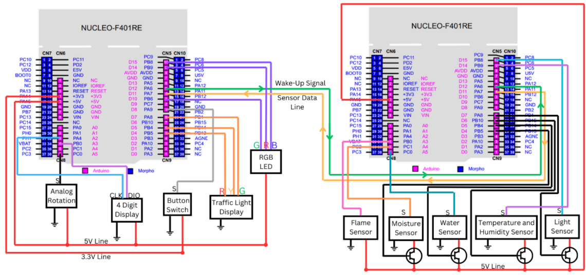

Experience with Microcontroller
I have made many small microcontroller projects. Read more to find out about them.
Plant Project
View on GitHub ↗About the Project
For one of my courses in 1A, myself and a team mate were tasked with making anything we wanted using an STM32 Nucleo board. There were only a few requirements. The first one was we needed to solve a problem. Myself and my parten had a habit of killing plants so we decided to make an automatic plant monitor. Another requirement was that we needed to use two boards and get them to talk to each other. We also needed to be able to display something to the user.
I was at this point some what familiar with microcontollers so I implemented all the circuity and code by myself while my partner worked on documentation and meetings. The basic layout of the project is shown below in the schematic. I know that there are transistor symbols, ignore those. I didn't understand how transistors worked and thought they were perfect digital switches so I was going to control power to each sensor by selecting it with the buss line. The idea is that each sensor only was turned on when it was needed to save power because origionally I thought the power required to turn all sensors on was too much. I was wrong after measuring and ended up hooking all sensors up dirrectly.


The idea was that there were 5 sensors that keeped track of the plants health and that data was sent to the user via a 4 digit display. The traffic light was used to indicate the plants health. The rotary encoder (potentiometer) and button were used to look at different sensor data and the RGB LED was for telling the user what sensor they had selected. And yes, I did include a flame sensor. It came with sensors packet I ordered online and thought it would be funny to include. If the plant catches fire the traffic light turns red, in hind sight maybe I should have included an alarm. Below is a photo of the board with the sensors and interface excluding the 4 digit display.

We were not allowed to use any libraries except for communication between the boards so I had to implement the 4 digit display by myself. Below is a photo of the 4 digit display with the sensors and interface. I never intended to share these photos thus why this photo doesn't show the 4 digit display well.

To implement this I used 4 shift regitsters to run each of the 4 7-segment displays. This took me a while to get working but I eventually was able to get it to work. The video below shows it counting. I have automuted the video as I took the video for a friend who had provided me with the shift registers and he walked me through how to use one.
To see the full documentation that myself and my partner made you can see that here.
Drone project
View on GitHub ↗About the Project
More about the project can be found here. To give a quick summary of the project. I built a 4 motor drone from scratch. I used and ESP32 WROOM board to control the drone. The ESP32 used PWM to control the ESC's which inturn controlled the motors. I integrated a gyroscope chip to be able to tell dirrection and tilt, and I controlled the drone via a PS3 controller connected to the ESP32 via bluetooth.
IC Programmer
View on GitHub ↗About the Project
A friend had ordered too many LH5164A-10L SRAM 64Kbit memory chips and gave me a couple to play around with. I wanted to read and write data off of them to see how the process worked so I used my Arduino Due to read and write data from and to the memory chip. The project was fairly simple, it involved writing an 8-bit memory address and 8-bit data to the chip and enabling writing. Likewise reading was similar, I sent in an 8-bit memory address and read from the 8-bit data line. I was able to fully read and write to the chip. I was able to varify this by sweeping over the entire chip and reading the memory addresses, then writing to specific ones, then reading again. Everything matched so the code worked.